MIB Cars Analysis
Commercial prioritization and forecasting from sales opportunity data
Executive Summary
- This analysis examines an auto-parts sales opportunity pipeline, identifying structural inefficiencies (i.e. CRM input errors, lack of prioritization, and inaccurate forecasting) that drive a structurally low 22.7% conversion rate.
- We propose two static / at-creation models: a win/loss classifier (AUROC 73.6%) for early opportunity prioritization, and a regression model for deal sizing with 63.0% MdAPE on held-out test data.
- We show that focusing on the top 20% of most likely opportunities lifts win rates from the 22.7% baseline to 51.7%; while focusing on the top 25% expected-value ranked opportunities captures 55.6% of total won revenue.
- We recommend embedding scores in the CRM at opportunity creation, piloting via A/B test, and setting clear thresholds to operationalize prioritization in sales workflows.
- We also simulate strategic levers under the static setup and find only modest upside, which reinforces that better process-history data is needed before using the models for bigger operating decisions.
Agenda
- Business framing and process assumptions
- EDA findings that matter for prioritization and forecasting
- Modelling approach
- Application scenarios
- Conclusions and next steps
Business framing
The pipeline is non-linear, so the data reflects a moving sales process
- The current sales process tracks auto-parts opportunities across both new leads and existing customers.
- Opportunities transition between the stages Data entry → Identified / Qualifying → Qualified / Validating, and Validated / Gaining Agreement → Closed (Win/Loss).
- Opportunities can move between stages in either direction, and they can also stall within a stage for extended periods.
- Each opportunity ultimately resolves as either a win or a loss.
- Sales teams maintain an estimated deal value, which is updated as the opportunity progresses.

Most value sits in a small share of opportunities making prioritization an important growth lever
Conversion and value concentration across the pipeline:

- Low efficiency: only 22.7% conversion, indicating misallocated effort
- Skewed deal mix: $94K avg vs $50K median → long tail of large deals
- Value concentration: bigger deals win more → focus should shift
- Clear opportunity: prioritize by win probability and deal size, ideally both
- Implication: focus on the right deals, not more deals
We focus on two modelling use cases: prioritization and forecasting
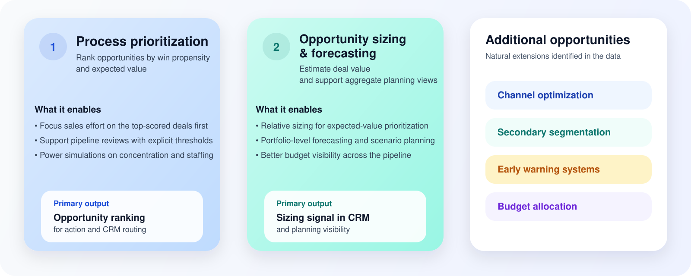
Exploratory data analysis
The data is sufficient for prioritization and directional forecasting, despite quality issues
- Scale: 78,025 sales opportunities and 19 variables like:
- at-start information: client size, opportunity type, product category, region, etc.
- sales process details: elapsed time, stage changes, stage ratios, etc.
- targets like amount and win/loss status.
- Validation removed duplicates and zero-amount opportunities prior to modelling; remaining data issues were intentionally retained.
- For the modelling experiments shown here, the sample used 75,819 eligible rows out of 78,025 total rows with valid targets.
Row counts per type of data quality issue:
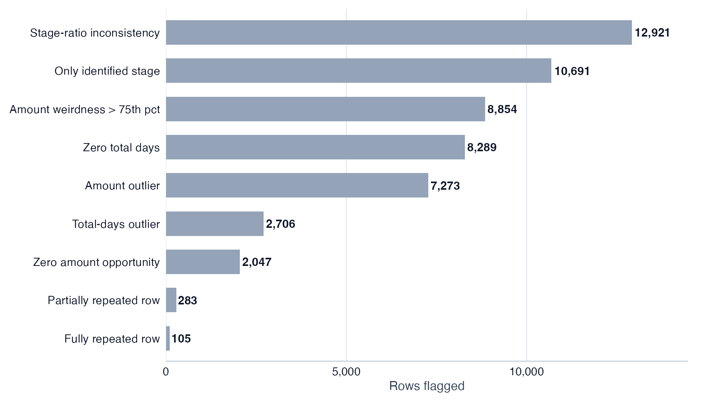
Tailor commercial treatment by client size: scale small, focus high-value
Opportunity counts and win rates by client-size segment:

- Most volume is ≤100K → scale this segment
- Win rates are similar across sizes → use size for treatment, not targeting
- Larger deals drive value → prioritize high-value accounts
Treat acquisition and expansion as distinct growth engines, each with its own playbook and resource model.
- (Re)Acquisition (no activity in 2 years): 69,208 opportunities, 17.3% win rate
- Engagement / upselling: 8,817 opportunities, 63.9% win rate
- A practical first split: separates low-history acquisition from higher-propensity expansion.
Opportunity counts and win rates by funnel stage:

Performance differences are driven by product mix, not geography
Distribution of amount and win rates by type, subtype, and region:
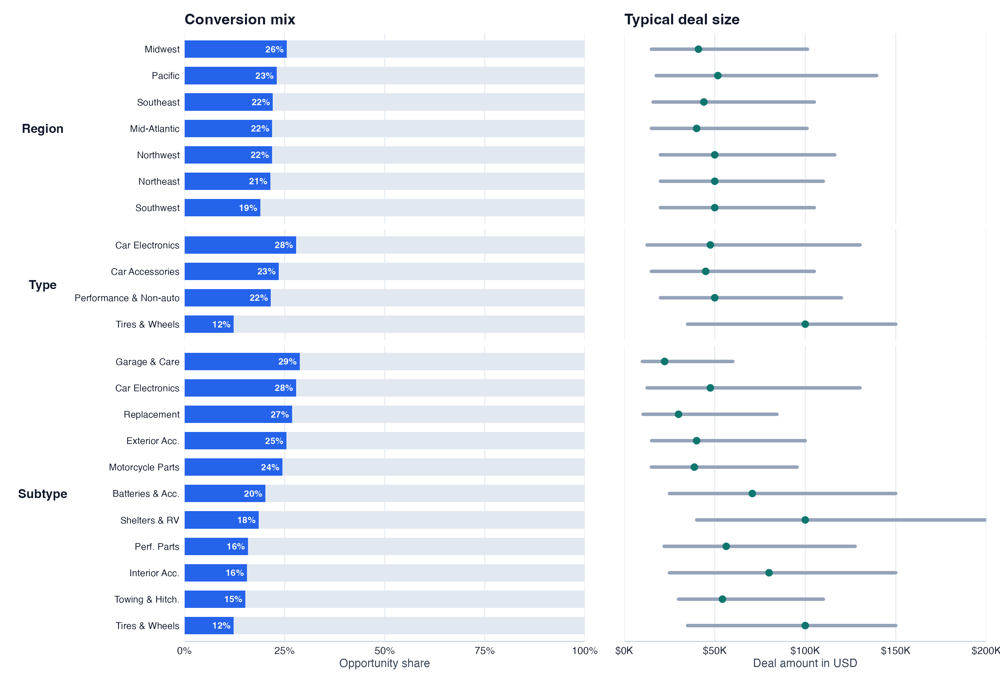
- Region is not a strong driver of conversion or deal size
- Type and subtype drive meaningful variation in both outcomes
- Prioritization should be product-driven, not geography-driven
The strongest predictors of win and amount emerge in the IV analysis


- The left chart shows IVs against the win/loss target, while the right chart shows IVs against the amount target, using the full set of variables that enter the models.
- Process-time variables and stage-ratio features remain among the strongest signals for classification, while the amount target includes product and client-size descriptors as strong predictors.
Modelling
We prioritize static models because snapshot timing is uncertain
Static / pre-sales process model
- Used for early decisions at opportunity creation especially around prioritization and sizing.
- Uses only at-creation variables: product / route / region / client-size / past-revenue descriptors.
- This is the setup used here. It is the safer operational choice when we cannot verify when the snapshot was taken.
Dynamic / during sales process model
- Used for ongoing re-prioritization and re-sizing during the process.
- Uses the static variables plus process-state variables: elapsed time, stage changes, cumulative timing, and stage ratios.
- It scores much better, but it is more exposed to timing leakage if the dataset snapshot is close to closure.
- That version is kept in the annex as a reference benchmark.
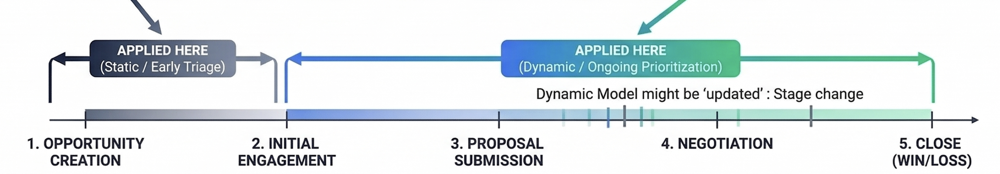
Model performance was tested on a realistic held-out sample
- Train / test split: 70% / 30%
- Train: 53,073 | Test: 22,746
- Stratified on win/loss and amount, keeping outcome balance and deal mix stable
- 5-fold CV on train, final evaluation on hold-out
- Different preprocessing for X and y depending on model, same split for fair evaluation
Set distribution treemap:

Static prioritization model supports earlier, safer reallocation of sales effort
- Target: Opportunity Result.
- Business use: early prioritization and ranking the pipeline by win propensity at opportunity creation.
- Therefore we focused on ranking metrics such as ROC AUC and PR AUC.
- We used only at-creation variables, excluding process-timing fields and the amount target.
- Selected final classifier: Calibrated Balanced Random Forest over the classic preprocessed feature set (
random_forest_classifier_balanced_calibrated). - This model has moderate but usable performance for early triage (AUROC 73.6%, Accuracy 81.0% @ 54.5% threshold) versus the baselines (AUROC 50.0%, Accuracy 77.3% for the always-false classifier).
Classification model feature importances:
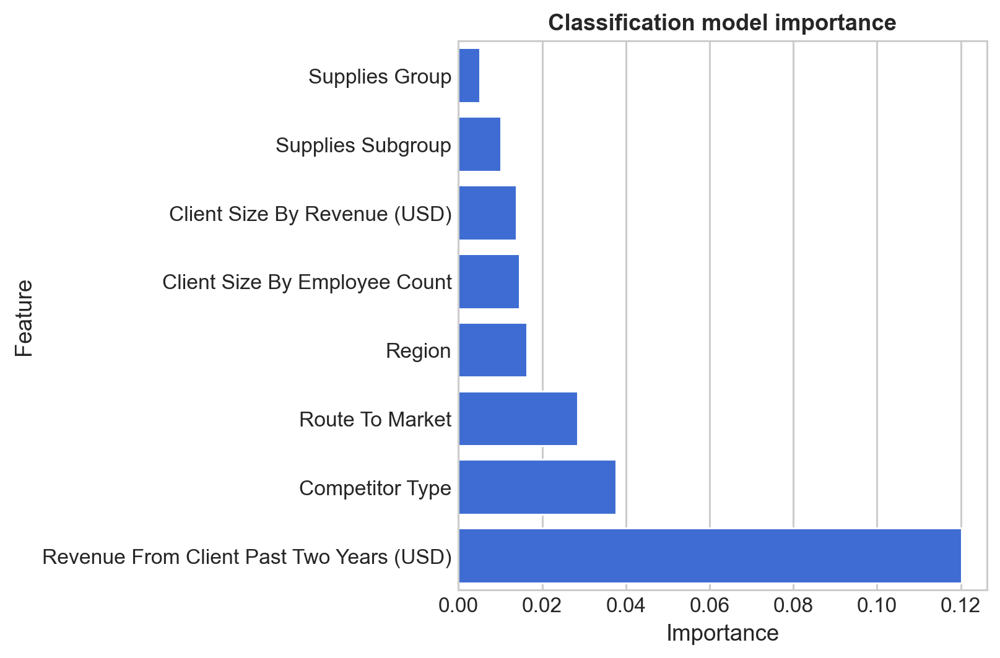
Static prioritization model supports earlier, safer reallocation of sales effort (cont., with performance metrics)
The following table shows the selected model’s performance on both CV and held-out test, compared to random and simple baselines:
| Model | Split | ROC AUC | PR AUC | Accuracy | Precision | Recall | F1 |
|---|---|---|---|---|---|---|---|
| Selected | CV | 74.0% | 52.6% | 80.9% | 73.4% | 25.0% | 37.3% |
| Selected | Held-out test | 73.6% | 52.8% | 81.0% | 73.5% | 25.3% | 37.6% |
| Random baseline | Held-out test | 50.5% | 22.9% | 65.1% | 23.5% | 23.6% | 23.5% |
| Always false baseline | Held-out test | 50.0% | 22.7% | 77.3% | 0.0% | 0.0% | 0.0% |
| Always true baseline | Held-out test | 50.0% | 22.7% | 22.7% | 22.7% | 100.0% | 37.0% |
Conclusions:
- The model has enough ranking signal (AUROC 73.6% on hold-out) to support early screening, and it uses a more precision-oriented operating threshold because the business action is to focus scarce sales effort.
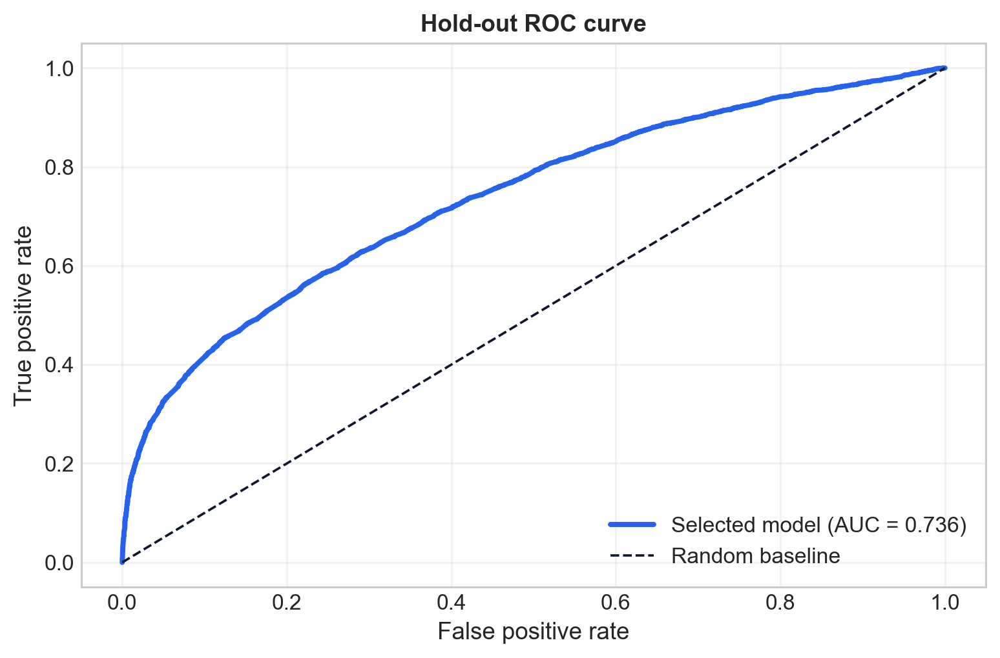
Use the amount model for per-opportunity sizing and ranking, not deal-level precision
- Target: Opportunity Amount USD.
- Business use: sizing and directional forecasting.
- Therefore we focused on error metrics such as MAE and especially MAPE since it is scale-invariant and better captures the relative error across the wide deal-size distribution.
- We used only at-creation variables, excluding process-timing fields and the win/loss target.
- Selected final regression model: Yeo-Johnson transformed XGBoost regressor (
xgboost_yeojohnson), selected by lowest CV Median APE. - The model beats simple baselines on MAE and Median APE, but with R² ≈ 0.04, MAE ≈ 66.7k USD, and Median APE ≈ 63%, deal-level precision remains weak, so the best use case is directional sizing and ranking rather than exact deal-level forecasts.
Amount model feature importances:
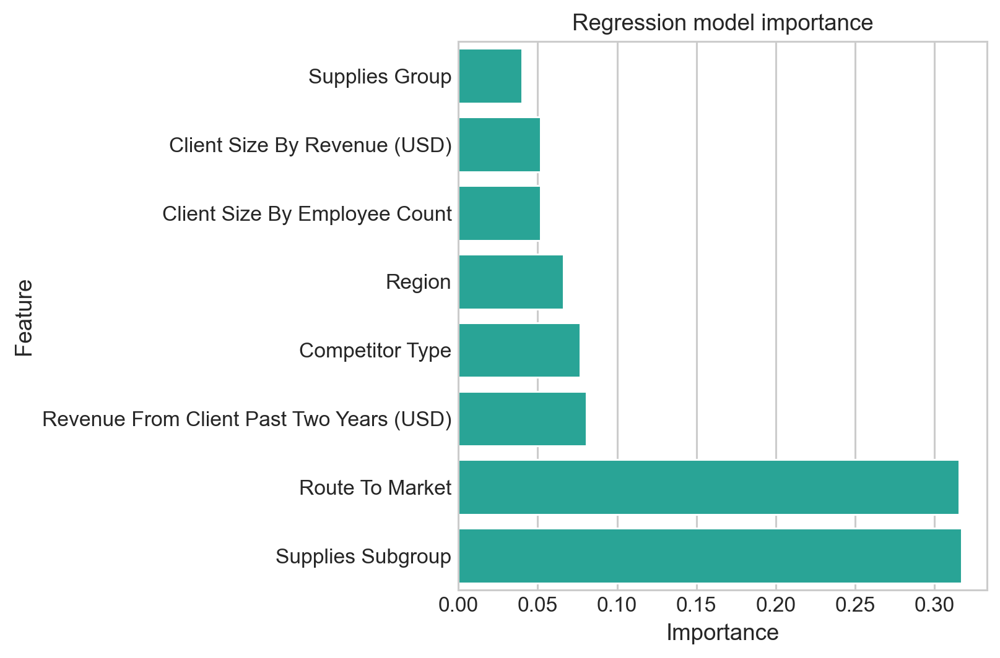
Use the amount model for per-opportunity sizing and ranking, not deal-level precision (cont., with performance metrics)
The following table shows the selected model’s performance on both CV and held-out test:
| Model | Split | R² | MAE | Median APE |
|---|---|---|---|---|
| Selected | CV | 0.041 | 66.7k USD | 63.1% |
| Selected | Held-out test | 0.044 | 66.7k USD | 63.0% |
| Mean baseline | Held-out test | -0.000 | 84.9k USD | 88.3% |
| Median baseline | Held-out test | -0.108 | 74.9k USD | 75.0% |
| Random baseline | Held-out test | -0.972 | 113.4k USD | 90.1% |
Conclusions:
- Model is more useful for relative sizing and ranking than for exact portfolio totals, which remains the tradeoff from selecting by Median APE.
- Aggregate actual amount: 2.138B USD on the held-out test set.
- Aggregate predicted amount: 1.279B USD on the held-out test set.
- Mean absolute error per opportunity: 66.7k USD.
Forecast vs actual scatter plot:
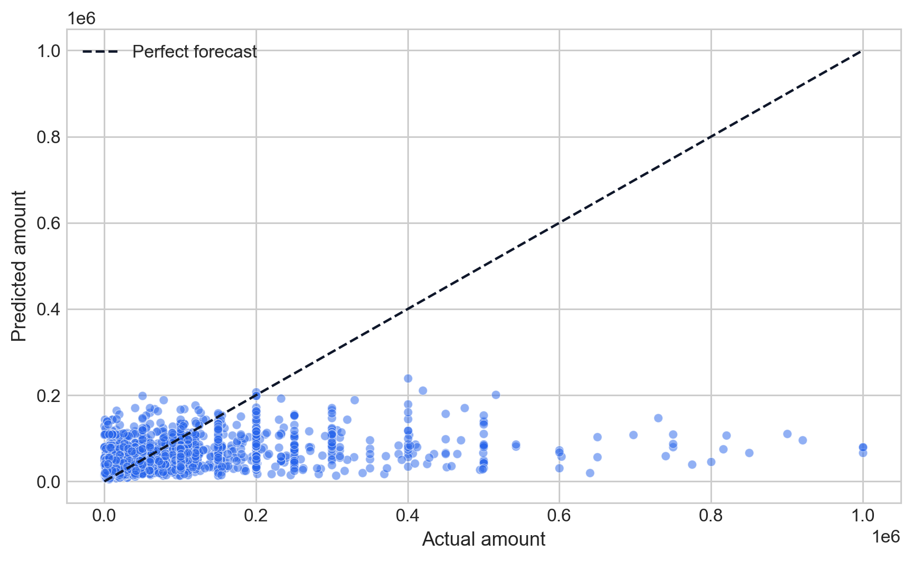
Application scenarios
More than doubling conversion is achievable by focusing on the top 20% of opportunities, without increasing pipeline size
- Sales effort is currently spread across low-probability deals → concentrating on the top-scored opportunities can raise conversion efficiency.
- Top 20% of opportunities: 51.7% conversion vs 22.7% baseline (2.27× lift).
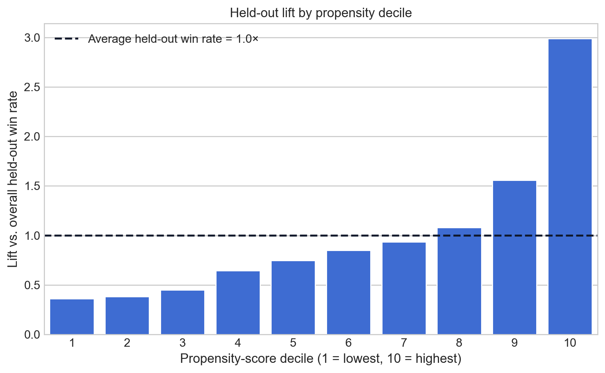
Concentration (~38% value capture at top 10%) still makes expected-value prioritization useful
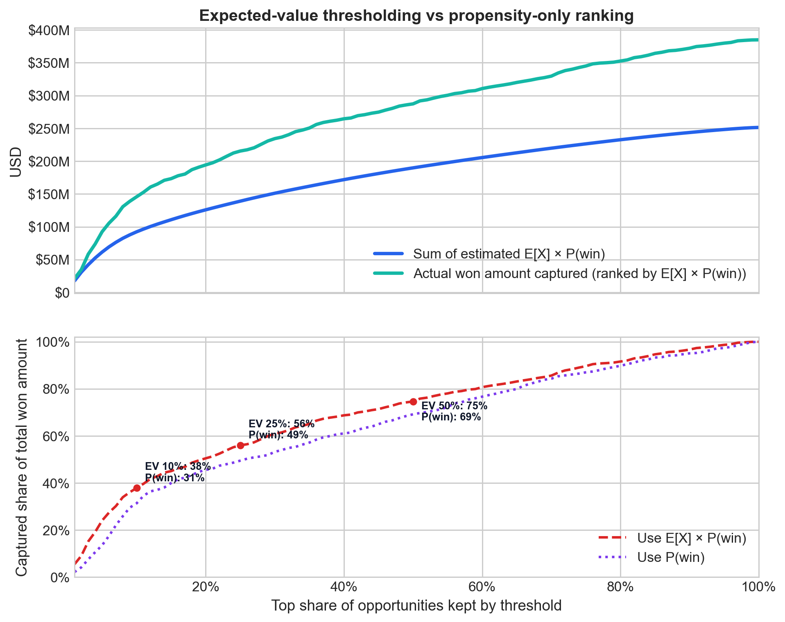
- Rank the pipeline using expected value (E[Amount] × P(Win)), not just propensity especially under limited sales capacity.
- At top 10%, expected-value ranking captures 37.9% of won revenue vs 31.4% with propensity-only.
- By top 25%, expected-value ranking captures 56.0% of won revenue, after which the curve starts to flatten.
Combining model outputs creates actionable commercial segments
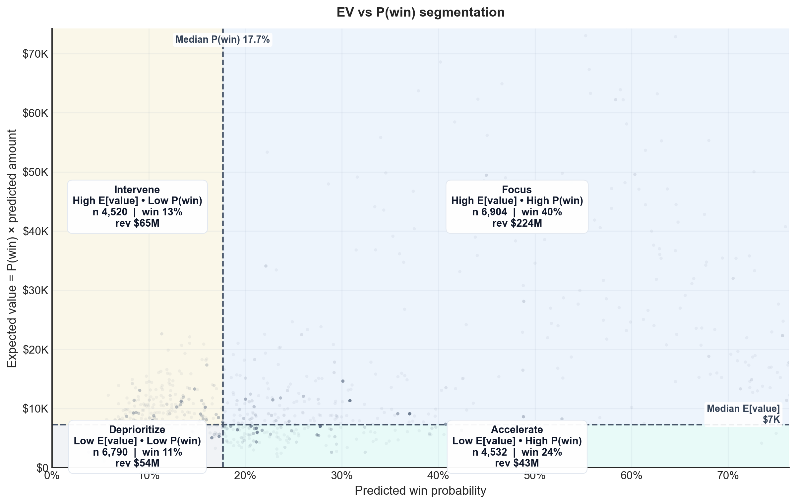
- Simple split, still useful: Combining expected value and win probability separates opportunities into workable commercial tiers even with the weaker static model.
- Clear but more modest performance differences: each segment still shows different conversion rates and revenue contribution.
- Direct CRM translation: Segments map to actions like intervene, focus, accelerate, or deprioritize.
- Operational, not theoretical: This provides a practical decision layer for sales, not just model output.
Model outputs should be automatically embedded in the CRM
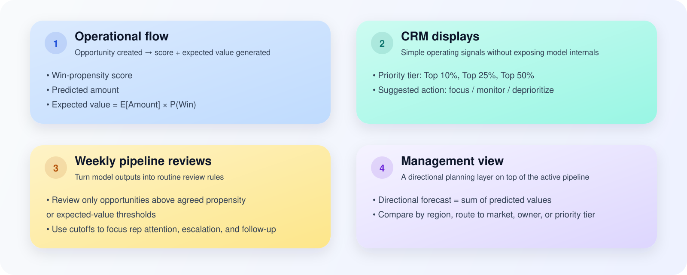
Model outputs can inform broader commercial strategy
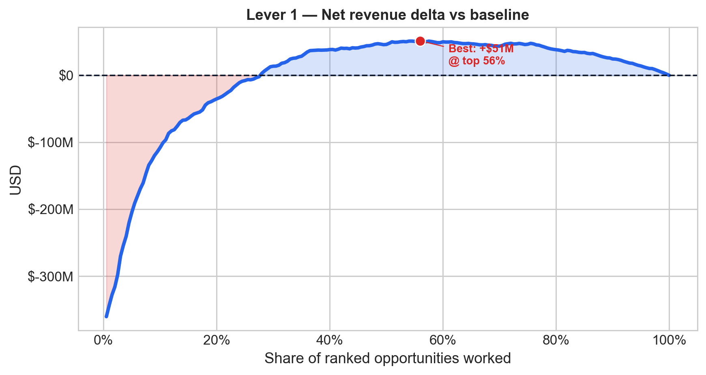
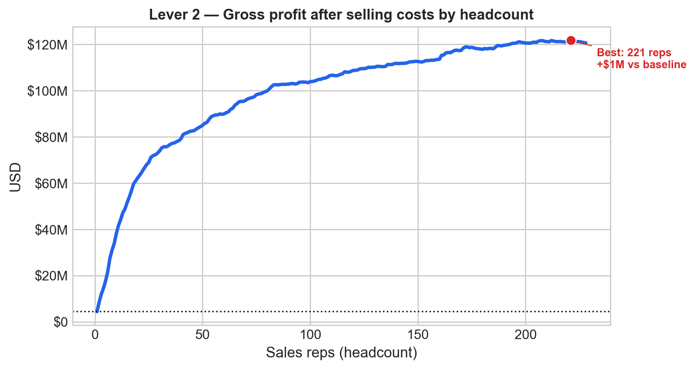
- Lever 1, Focus the team: Under the static ranking with a stronger focus-gain assumption (λ_max = 2.0×), the upside becomes more visible. Best simulated point is top ~56% of the ranked pipeline, reaching $436M in revenue, or about +$51M vs. baseline.
- Lever 2, Optimize salesforce size: With a richer contribution formula and a more realistic comp structure, the headcount signal is still modest but more realistic. Best simulated point is 221 reps, retaining 99.7% of revenue and improving contribution margin by ~+$1.2M vs. baseline.
- Another option is segmenting the salesforce, with a specialized team focused on high-value opportunities/accounts and another team managing the rest.
These simulations show business potential, not final operating estimates
- Simulations are based on held-out observational predictions, so they are weaker than an actual backtest and/or experiment and they cannot capture the full causal impact of acting on model outputs.
- Potentially relevant covariates are missing: the dataset lacks important drivers such as richer account history, rep behavior, pricing context, and external market conditions.
- Dynamic results are kept in the annex as a benchmark, because they are much stronger example of how the models could perform under ideal conditions, but also more exposed to timing leakage if the snapshot was taken late in the sales process.
- Missing business context: key factors such as sales capacity, cost structure, pricing, and CRM integration were not incorporated or validated with business stakeholders, limiting real-world applicability.
Conclusions
Key takeaways for commercial decision-making
- Prioritization is the highest-impact, low-effort lever
- Win/loss model (moderate scoring performance, AUROC 73.6%) still improves focus early in the process
- Top 20% opportunities go from ~22.7% win rate (baseline) to ~51.7%
- Use the amount model directionally, not for forecasting
- 63.0% MdAPE per deal and ~40% under-forecast at portfolio level
- Expected value is the strongest prioritization approach
- Outperforms individual models for value capture
- Revenues are still concentrated (~38% top 10% opp., ~56% top 25% opp.) and should be prioritized accordingly
- Implications for commercial strategy:
- Focus efforts on the best opportunities first
- Treat bigger strategic levers cautiously until richer process-history data is available
- Recommendations for implementing model-driven sales:
- Always embed through CRM.
- [1] Pilot static prioritization first, then [2] add the amount model for sizing and ranking and finally, [3] combine into expected-value prioritization to guide focus and resource allocation.
- (Optional but recommended) Keep an experimental mindset and run A/B tests continuously to validate the impact of acting on model outputs, and also to collect contrafactual data to improve the models over time.
Next steps: how to operationalize model-driven sales
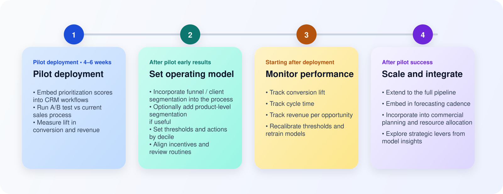
Thank you
Questions, comments, and feedback are welcome!
Annex
Annex: static classification CV leaderboard
| Model | ROC AUC | PR AUC | Accuracy | Precision | Recall | F1 |
|---|---|---|---|---|---|---|
| random_forest_classifier_balanced_calibrated | 74.0% ± 0.6% | 52.6% ± 1.3% | 81.0% ± 0.4% | 70.5% ± 1.8% | 28.0% ± 1.1% | 40.1% ± 1.4% |
| random_forest_classifier | 73.9% ± 0.7% | 52.5% ± 1.3% | 72.1% ± 0.4% | 41.9% ± 0.8% | 58.7% ± 1.3% | 48.8% ± 0.9% |
| random_forest_classifier_balanced | 73.9% ± 0.7% | 52.5% ± 1.3% | 72.1% ± 0.4% | 41.9% ± 0.8% | 58.7% ± 1.3% | 48.8% ± 0.9% |
| xgboost | 73.5% ± 0.6% | 51.8% ± 1.5% | 80.8% ± 0.5% | 71.5% ± 1.4% | 26.4% ± 2.3% | 38.8% ± 2.6% |
| xgboost_balanced | 73.3% ± 0.8% | 51.7% ± 1.5% | 71.2% ± 0.7% | 40.3% ± 0.8% | 58.2% ± 1.6% | 47.6% ± 0.5% |
| logit_elasticnet_robust_scaler_balanced | 72.5% ± 0.5% | 50.9% ± 1.2% | 71.1% ± 0.7% | 40.4% ± 0.6% | 56.7% ± 2.4% | 47.1% ± 0.8% |
| logit_elasticnet_robust_scaler | 72.4% ± 0.5% | 50.9% ± 1.2% | 80.9% ± 0.4% | 70.9% ± 1.6% | 26.7% ± 1.7% | 38.8% ± 2.0% |
| classic_logit_robust_scaler | 72.4% ± 0.5% | 50.9% ± 1.2% | 80.9% ± 0.4% | 70.9% ± 1.6% | 26.8% ± 1.6% | 38.8% ± 1.9% |
| logit_elasticnet_binned_ohe_balanced | 72.4% ± 0.5% | 50.1% ± 0.9% | 70.5% ± 0.6% | 39.7% ± 0.5% | 57.3% ± 2.4% | 46.9% ± 0.7% |
| logit_binned_ohe_balanced | 72.4% ± 0.5% | 50.1% ± 0.9% | 70.5% ± 0.6% | 39.7% ± 0.5% | 57.4% ± 2.4% | 46.9% ± 0.7% |
| logit_binned_ohe_balanced_calibrated | 72.4% ± 0.5% | 50.1% ± 0.9% | 80.6% ± 0.3% | 68.2% ± 2.5% | 27.5% ± 3.1% | 39.0% ± 2.9% |
| logit_elasticnet_binned_ohe | 72.3% ± 0.4% | 50.1% ± 0.9% | 80.6% ± 0.4% | 68.3% ± 2.5% | 27.8% ± 3.3% | 39.4% ± 3.1% |
| logit_binned_ohe | 72.3% ± 0.4% | 50.1% ± 0.9% | 80.6% ± 0.4% | 68.2% ± 2.4% | 27.8% ± 3.2% | 39.4% ± 3.1% |
| logit_elastic_binned_woe_balanced | 71.2% ± 0.5% | 49.7% ± 0.8% | 69.5% ± 0.8% | 38.4% ± 0.6% | 56.7% ± 2.2% | 45.8% ± 0.3% |
| logit_elastic_binned_woe | 71.2% ± 0.5% | 49.7% ± 0.8% | 80.7% ± 0.4% | 68.3% ± 3.2% | 28.2% ± 4.3% | 39.7% ± 4.0% |
| logit_binned_woe | 71.2% ± 0.5% | 49.7% ± 0.8% | 80.6% ± 0.3% | 68.3% ± 3.2% | 28.2% ± 4.3% | 39.7% ± 4.0% |
| random_classifier | 50.2% ± 0.2% | 22.8% ± 0.1% | 65.4% ± 0.1% | 23.0% ± 0.3% | 22.4% ± 0.3% | 22.7% ± 0.3% |
| always_true_classifier | 50.0% ± 0.0% | 22.7% ± 0.0% | 22.7% ± 0.0% | 22.7% ± 0.0% | 100.0% ± 0.0% | 37.0% ± 0.0% |
Selected model in the current main deck: random_forest_classifier_balanced_calibrated.
Annex: static regression CV leaderboard
| Model | R² | MAE (USD) | MAPE | Median APE |
|---|---|---|---|---|
| xgboost_yeojohnson | 0.041 ± 0.009 | 66.7k ± 1.5k | 158.4% ± 22.3% | 63.1% |
| xgboost_boxcox | 0.041 ± 0.009 | 66.7k ± 1.5k | 158.7% ± 23.9% | 63.1% |
| xgboost_log1p | -0.007 ± 0.009 | 67.6k ± 1.6k | 126.4% ± 19.5% | 63.5% |
| classic_linear_boxcox_robust_scaler | 0.031 ± 0.009 | 67.4k ± 1.5k | 173.5% ± 28.9% | 63.8% |
| classic_linear_yeojohnson_robust_scaler | 0.031 ± 0.009 | 67.4k ± 1.5k | 173.4% ± 28.9% | 63.8% |
| linear_power_scaler_binned_ohe | 0.029 ± 0.009 | 67.5k ± 1.5k | 176.8% ± 30.4% | 63.9% |
| classic_linear_log1p_robust_scaler | -0.017 ± 0.008 | 68.3k ± 1.6k | 144.6% ± 24.8% | 64.4% |
| median_regressor | -0.108 ± 0.002 | 75.0k ± 1.5k | 124.7% ± 28.4% | 74.6% |
| random_forest_regressor | 0.124 ± 0.009 | 74.2k ± 1.1k | 283.4% ± 44.4% | 77.5% |
| xgboost | 0.136 ± 0.008 | 73.8k ± 1.0k | 289.3% ± 46.0% | 78.6% |
| linear_binned_ohe | 0.127 ± 0.008 | 74.7k ± 1.0k | 298.7% ± 52.5% | 78.6% |
| classic_linear_robust_scaler | 0.128 ± 0.007 | 74.7k ± 1.1k | 295.1% ± 50.2% | 78.7% |
| linear_binned_woe_robust_scaler | 0.124 ± 0.008 | 74.8k ± 1.1k | 298.7% ± 56.6% | 79.1% |
| elastic_binned_woe | 0.124 ± 0.008 | 74.8k ± 1.1k | 298.7% ± 56.6% | 79.1% |
| mean_regressor | -0.000 ± 0.000 | 84.9k ± 1.3k | 235.0% ± 53.9% | 88.3% |
| random_regressor | -1.053 ± 0.057 | 115.0k ± 2.1k | 164.1% ± 65.3% | 90.4% |
| xgboost_pseudohubererror | -0.473 ± 0.011 | 92.3k ± 2.0k | 5.3% ± 1.2% | 96.1% |
| elasticnet_robust_scaler | 0.058 ± 0.003 | 80.2k ± 1.2k | 260.0% ± 54.5% | 99.0% |
Selected model in the current main deck: xgboost_yeojohnson by CV Median APE.
Annex: static hold-out calibration of the selected classifier
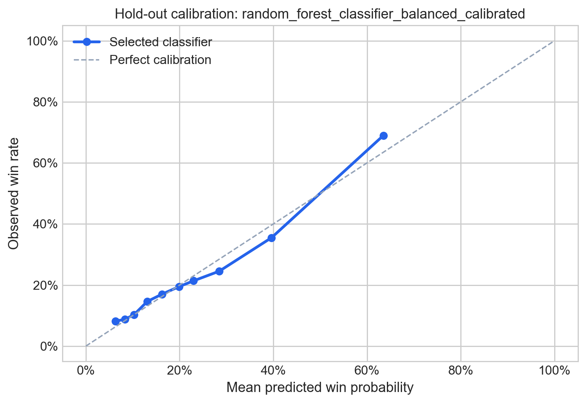
- This chart shows the selected static classifier itself on the held-out set:
random_forest_classifier_balanced_calibrated. - It compares the model’s mean predicted win probability to the observed win rate across quantile bins.
- The closer the curve sits to the 45-degree reference, the more usable the probabilities are for thresholding and expected-value calculations.
Annex: static hold-out classification report at the selected model’s optimal threshold
Threshold chosen on training out-of-fold predictions to maximize precision subject to recall ≥ 25% for the selected model: 54.5% predicted win probability.
| Model | Threshold | Accuracy | Precision | Recall | F1 |
|---|---|---|---|---|---|
| Selected @ optimal threshold | 54.5% | 81.0% | 73.5% | 25.3% | 37.6% |
| Random classifier | n/a | 65.1% | 23.5% | 23.6% | 23.5% |
| Always false | n/a | 77.3% | 0.0% | 0.0% | 0.0% |
| Always true | n/a | 22.7% | 22.7% | 100.0% | 37.0% |
| Model | TN | FP | FN | TP |
|---|---|---|---|---|
| Selected @ optimal threshold | 17,104 | 472 | 3,860 | 1,310 |
| Random classifier | 13,597 | 3,979 | 3,951 | 1,219 |
| Always false | 17,576 | 0 | 5,170 | 0 |
| Always true | 0 | 17,576 | 0 | 5,170 |
Diagnostic note: the threshold is selected on train-side OOF predictions, then evaluated once on the untouched hold-out set shown here.
Annex: static regression error by amount bin on the hold-out set
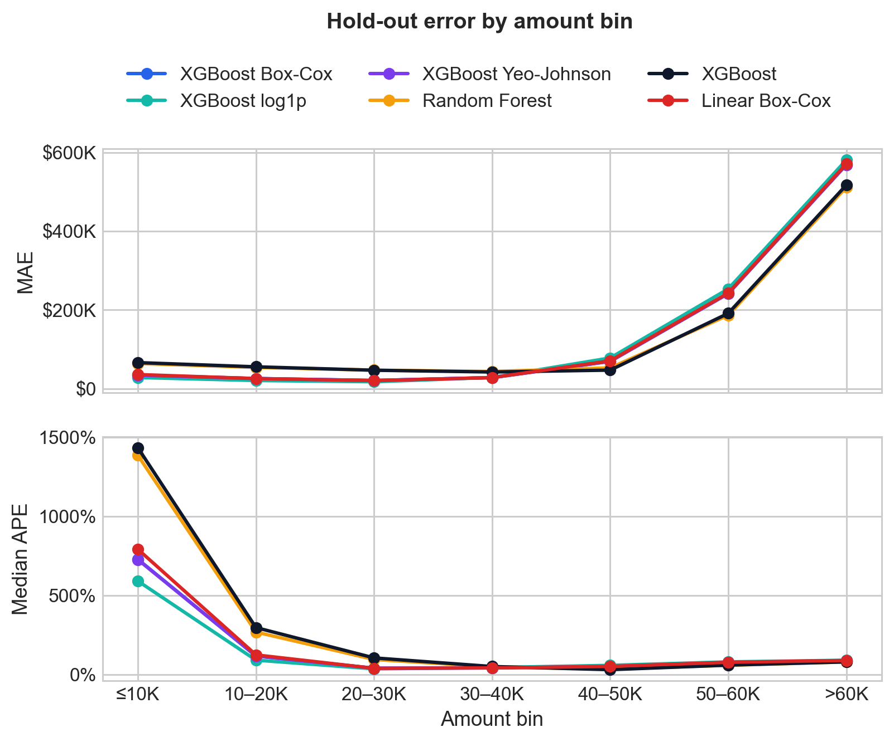
- The comparison shows where model error changes most across deal-size bands, instead of averaging everything into one MAE figure.
- Under the static setup, the transformed XGBoost variants still lead the relative-error ranking, with XGBoost Yeo-Johnson narrowly selected overall.
- The main gain still comes from controlling typical proportional error, while the largest opportunities continue to create a gap between deal-level accuracy and total-portfolio forecasting.
Annex: static held-out forecast bias of the selected amount model
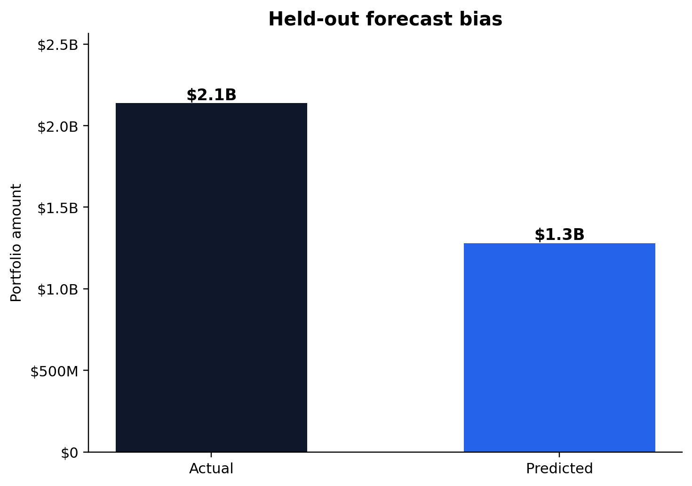
- The selected static amount model under-forecasts the held-out portfolio: $1.28B predicted vs $2.14B actual.
- That is a gap of about $859M, or roughly 40% below the realized total on the test set.
- This is why the main deck uses the amount model for directional sizing and ranking, not as a committed aggregate forecast without an explicit bias-correction layer.
- The same hold-out evaluation still supports the model for per-opportunity ordering because MAE ≈ $66.7K and Median APE ≈ 63% are judged at deal level, not portfolio-total calibration.
Annex: data-quality issue profile from the validation notebook

- Source of truth:
notebooks/1_data_validation_and_cleaning/01_basic_validation.ipynb, which buildsproblem_tags,problem_count, and the row-level validation flags before exportingcleaned_data.parquet. - The row-count distribution shows that most records have 0–1 detected issues, while the issue-type breakdown shows that the main burden comes from stage-ratio inconsistencies, amount weirdness, and only-identified-stage records.
- This supports the data-prep choice used throughout the deck: remove clearly unusable rows (duplicates, invalid targets) but retain many imperfect rows with explicit flags because the modeling task is ranking and prioritization, not accounting-grade reconciliation.
Annex: numeric variable correlation heatmap
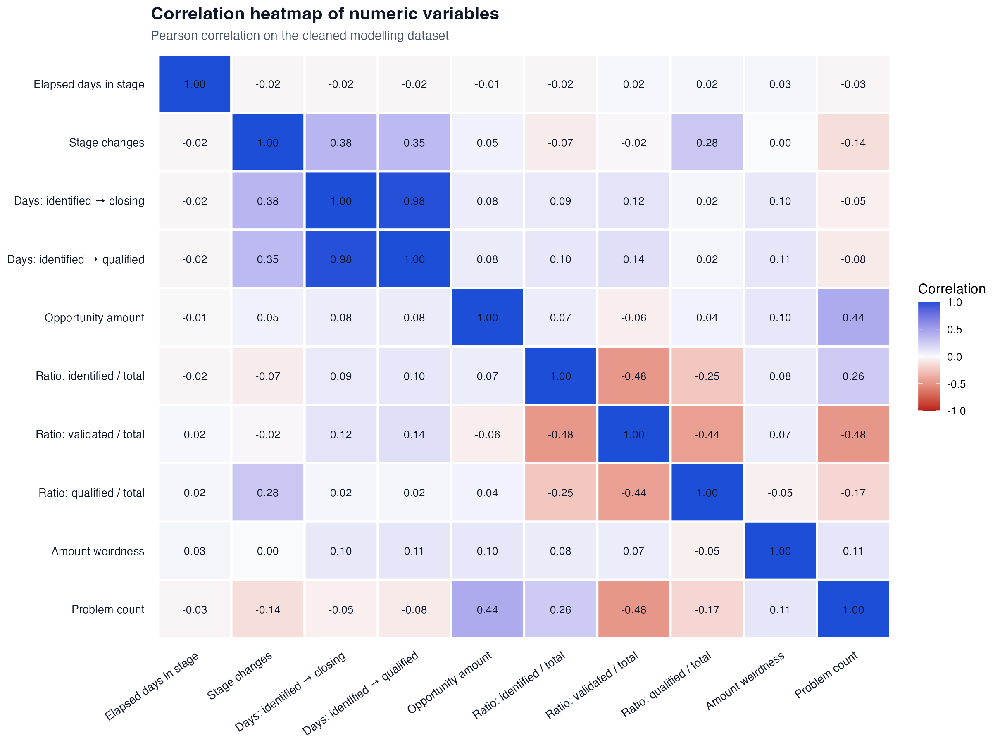
- Most numeric relationships are weak, suggesting limited linear redundancy across variables.
- Process-duration variables are highly correlated (e.g. identified→closing vs identified→qualified), so they likely capture overlapping timing effects.
- Stage-ratio variables show expected inverse relationships, reflecting how progress through the funnel mechanically shifts the composition of stage shares.
Annex: strategic lever 1 — focus the same team on fewer, better-ranked deals
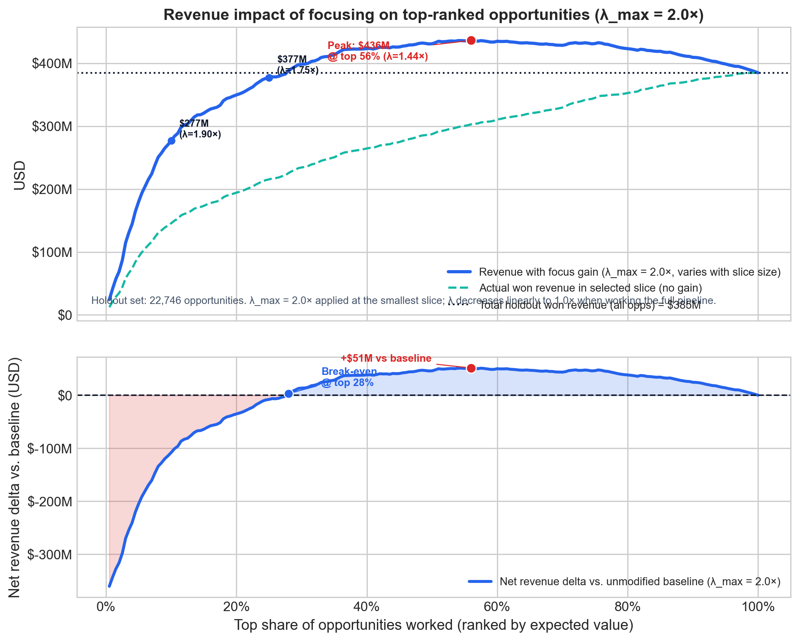
- Same salesforce, fewer deals — dropped opportunities go unworked.
- Focus gain grows as the slice shrinks (λ_max = 2.0× at top slice → 1.0× at full pipeline).
- Break-even at top ~28%; optimal at top ~56% → $436M (+$51M vs. baseline).
Annex: focus-gain sensitivity across λ values
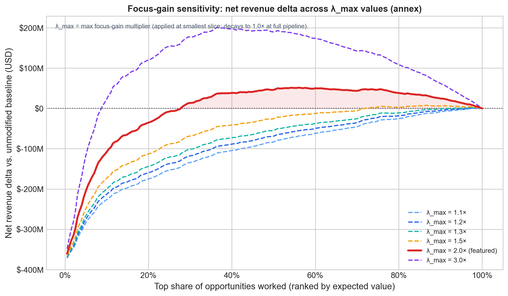
- Each curve shows the net revenue delta in USD vs. the full-pipeline baseline for a given λ_max — dropped deals are simply unworked (zero revenue from them), so the only gain is the focus uplift on worked deals.
- λ decays linearly to 1.0× at the full pipeline — so the gain is highest when the team is most concentrated.
- Break-even shifts left as λ_max increases: under the static model, the base scenario breaks even at about top 28% of the ranked pipeline when λ_max = 2.0.
- The current static deck uses λ_max = 2.00 as the base scenario.
Annex: strategic lever 2 — practical contribution formula
We replace the old revenue − rep cost shortcut with a more realistic contribution measure:
Contribution = RealizedRevenue × margin_pct − SalesEffortCost − CommissionCost − AcquisitionCost − ServingCost
- Realized revenue:
amount_iif won, else0 - Margin %: product-group proxy used as a COGS fallback
- Car Accessories
68%, Performance & Non-auto62%, Tires & Wheels55%, Car Electronics58%, default63%
- Car Accessories
- Sales effort cost: team base+overhead allocated from rep capacity
- Commission cost:
7%of realized revenue - Acquisition cost: route-to-market proxy
- Fields Sales
2.4k, Reseller1.6k, Telesales0.85k, Telecoverage0.65k, Other/default lower values
- Fields Sales
- Serving cost:
8%of realized won amount
Why this matters: it keeps the earlier sales-effort framing, but separates fixed sales coverage from variable selling cost more cleanly, so the staffing curve is closer to how a B2B auto-parts sales team actually earns margin.
Annex: Strategic lever 2: Reduce the salesforce and let the model pick the best opportunities
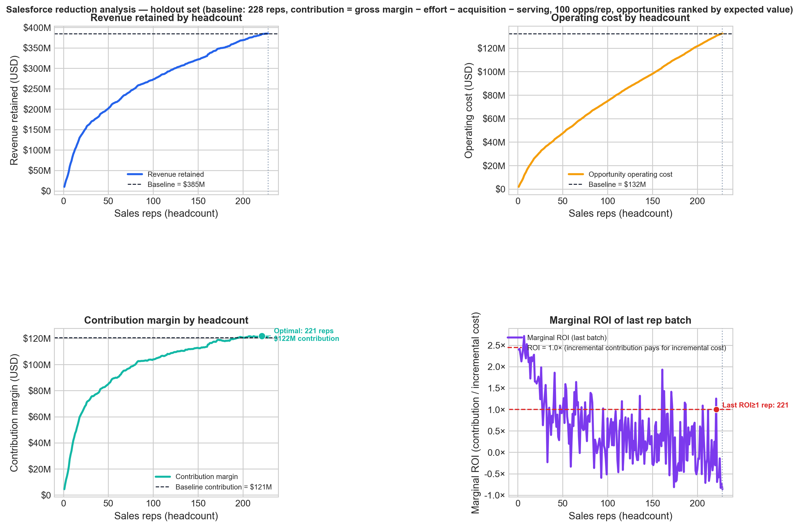
- Baseline: 228 reps, $385M realized revenue, and about $121M contribution after margin, base+overhead, commission, acquisition, and serving costs.
- Model ranks all opportunities by EV; each rep cut drops the lowest-ranked batch they covered.
- Optimal headcount: 221 reps → $384M revenue retained (99.7%) and +$1.2M contribution vs. baseline.
- Last individually positive rep batch is around rep #221 — beyond that, incremental contribution no longer covers incremental operating cost.
Annex: salesforce reduction — marginal contribution per rep batch
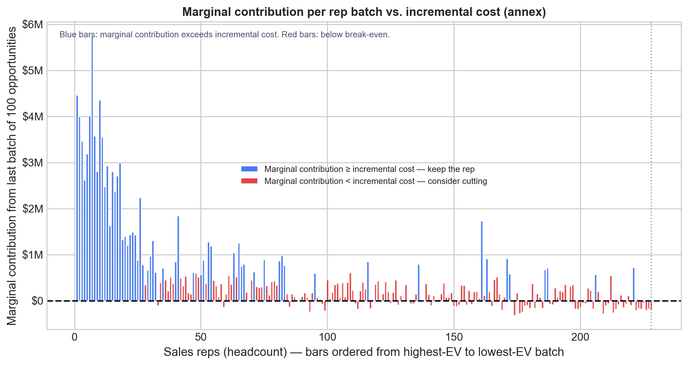
- Each bar shows the marginal contribution contributed by a batch of ~12 reps (one 100-opp increment), sorted from highest- to lowest-value batch.
- The comparison line represents the incremental operating cost of the same batch, not a flat rep-cost shortcut.
- Blue bars are ROI-positive: the batch adds more contribution than cost. Red bars are ROI-negative: cutting those reps improves contribution margin.
- Under the static ranking, the crossover is still late in the curve, which is why the contribution upside from resizing remains modest.
Annex: binning methods — easy explanation
- Binning means replacing a raw variable with a small number of ranges.
- Instead of using exact values like
17 days,43 days,91 days, the model can work with bands like:- 0–30 days
- 31–60 days
- 60+ days
- This is useful when the signal comes from thresholds or zones, not from a perfectly smooth linear relationship.
- In practice, binning helps when variables are:
- noisy
- skewed
- sensitive to outliers
- easier to interpret in ranges than in raw units
- So the intuition is simple: group similar values together before modeling.
Annex: binning methods — what optbinning does
- This project uses supervised binning with
optbinning. - “Supervised” means the bins are not chosen arbitrarily: they are learned using the target.
- The algorithm searches for cut points that make the bins as different as possible with respect to the prediction target.
- For classification, that means finding intervals where the win/loss mix is clearly different.
- For regression-style use, it means finding intervals that better separate the amount behavior.
- Compared with manual bucketing or equal-width bins,
optbinningis trying to find more informative splits. - In this repo, the wrapper is
NamedBinningProcessinnotebooks/4_modelling/binning.py, which keeps the output compatible with the sklearn pipelines used in the experiments.
Annex: binning methods — the 3 usage modes in this repo
| Usage mode | What the pipeline outputs | Why use it |
|---|---|---|
bin |
The learned bin labels themselves | Mainly useful for inspection / debugging / intermediate transforms |
bin_ohe |
The learned bins, then one-hot encoded into dummy columns | Keeps non-linear threshold effects while staying interpretable in linear/logistic models |
woe |
One WoE value per binned variable | Compresses each variable into a single monotonic signal and often stabilizes logistic-type models |
- Selected classifier in the main deck:
random_forest_classifier_balanced_calibrated - So the binning modes below describe the logit-family alternatives and supporting model variants, not the final chosen forest.
- supervised bins are learned first
- then the bins are one-hot encoded
- then logistic regression is fit
- then probabilities are calibrated
- WoE pipelines in the annex leaderboard use the same supervised binning step, but replace each bin with its Weight of Evidence value instead of a set of dummy columns.
- WoE intuition: positive WoE = more win-heavy than average; negative WoE = more loss-heavy than average.
Annex: how to read IV charts — classification / win-loss
- Information Value (IV) is a score used to rank how much predictive signal a variable carries against a target.
- For the classification / win-loss chart, IV is the classic binary-target version derived from Weight of Evidence (WoE).
| IV range | Interpretation |
|---|---|
| < 0.02 | Useless |
| 0.02 to 0.10 | Weak |
| 0.10 to 0.30 | Medium |
| 0.30 to 0.50 | Strong |
| > 0.50 | Suspiciously high → check for leakage |
- Colors add direction, because IV itself is only a strength score:
- green = increasing relationship
- red = decreasing relationship
- gray = categorical or unclear direction
- Asterisk (
*) = strictly monotonic relationship across bins. - Very high IV values for process variables can reflect genuinely strong signal, but they should always be checked for timing leakage.
Annex: how to read IV charts — regression / amount
- The regression / amount chart does not use the same IV definition as the win/loss chart.
- It comes from
ContinuousOptimalBinning, where IV is a surrogate separation metric based on differences in bin means. - So the regression IV values are useful for relative ranking within that chart, but they should not be read with the binary-IV table and should not be compared numerically to the classification IV values.
- Practical reading rule:
- use the classification IV chart with the standard heuristic bands
- use the regression IV chart only to see which variables separate amount behavior the most within that chart
- This is why regression IV values can look numerically much larger: they are on a different scale, not evidence of impossible predictive power.
Annex: original text version of the modelling use-cases slide
Selected for this project
- Process prioritization: rank opportunities by win propensity and support decisions on where sales effort should focus first.
- Opportunity sizing & forecasting: estimate deal value and aggregate expected sales for planning, prioritization, and budget visibility.
Additional opportunities identified in the data
- Channel optimization: test what-if scenarios around route-to-market and engagement model choices.
- Secondary market segmentation: create actionable commercial segments from predicted value and conversion potential.
- Early warning systems: flag opportunities that are likely to deteriorate or stall.
- Budget allocation: guide sales effort and product-focus decisions across segments, regions, and product lines.
Annex: original text version of the CRM embedding slide
Operational flow
Opportunity created → score + expected value generated
- As soon as a new opportunity enters the CRM, the workflow generates:
- win-propensity score
- predicted amount
- expected value = E[Amount] × P(Win)
CRM displays
- Priority tier: Top 10%, Top 25%, Top 50%, etc.
- Suggested action: focus / monitor / deprioritize
- This gives frontline teams a simple operating signal without exposing model internals.
Weekly pipeline reviews
- Review only opportunities above agreed propensity or expected-value thresholds.
- Use those cutoffs to focus rep attention, escalation, and follow-up.
Management view
- Directional forecast = sum of predicted values across the active pipeline.
- Management can compare it by region, route to market, owner, or priority tier.
Annex: original text version of the Next steps slide
- Pilot deployment (4–6 weeks):
- Embed prioritization scores into CRM workflows
- Run A/B test vs. current sales process and measure lift in conversion and revenue
- Define operating model (after pilot early results):
- Incorporate funnel/client segmentation into the process
- Potentially include product-level segmentation if it makes sense.
- Set clear thresholds and actions (e.g., top deciles = sales focus)
- Align sales forces with incentives and pipeline reviews to make sure model outputs are used effectively
- Monitor performance (starting after deployment):
- Track conversion lift, cycle time, and revenue per opportunity
- Continuously recalibrate thresholds and retrain models
- Scale and integrate (after pilot success):
- Extend to full pipeline and embed in forecasting cadence
- Incorporate into commercial planning and resource allocation
- Explore applying strategic levers such as pipeline optimization and salesforce adjustments based on model insights
Annex: classification CV leaderboard
| Model | ROC AUC | PR AUC | Accuracy | Precision | Recall | F1 |
|---|---|---|---|---|---|---|
| xgboost | 92.9% ± 0.4% | 82.2% ± 0.5% | 88.3% ± 0.4% | 78.5% ± 0.9% | 66.8% ± 1.2% | 72.2% ± 0.9% |
| xgboost_balanced | 92.8% ± 0.4% | 82.0% ± 0.6% | 86.2% ± 0.6% | 65.7% ± 1.3% | 82.0% ± 0.5% | 72.9% ± 0.9% |
| random_forest_classifier | 91.4% ± 0.4% | 77.3% ± 1.0% | 84.7% ± 0.6% | 62.6% ± 1.1% | 80.9% ± 0.6% | 70.6% ± 1.0% |
| random_forest_classifier_balanced | 91.4% ± 0.4% | 77.3% ± 1.0% | 84.7% ± 0.6% | 62.6% ± 1.1% | 80.9% ± 0.6% | 70.6% ± 1.0% |
| random_forest_classifier_balanced_calibrated | 91.2% ± 0.4% | 76.7% ± 1.2% | 86.9% ± 0.4% | 73.2% ± 1.1% | 66.6% ± 1.0% | 69.8% ± 0.8% |
| logit_elasticnet_binned_ohe_balanced | 88.1% ± 0.4% | 69.8% ± 0.5% | 79.4% ± 0.8% | 53.0% ± 1.2% | 81.8% ± 0.8% | 64.3% ± 1.1% |
| logit_binned_ohe_balanced | 88.1% ± 0.4% | 69.8% ± 0.5% | 79.4% ± 0.8% | 53.0% ± 1.1% | 81.8% ± 0.8% | 64.3% ± 1.0% |
| logit_binned_ohe_balanced_calibrated | 88.1% ± 0.4% | 69.8% ± 0.5% | 84.0% ± 0.3% | 71.1% ± 0.7% | 50.1% ± 1.2% | 58.8% ± 1.0% |
| logit_binned_ohe | 88.1% ± 0.4% | 70.0% ± 0.5% | 84.2% ± 0.3% | 71.1% ± 0.9% | 51.3% ± 1.3% | 59.6% ± 1.1% |
| logit_elasticnet_binned_ohe | 88.1% ± 0.4% | 70.0% ± 0.5% | 84.2% ± 0.3% | 71.3% ± 0.8% | 51.0% ± 1.2% | 59.4% ± 1.0% |
| logit_elastic_binned_woe_balanced | 87.7% ± 0.4% | 69.2% ± 0.3% | 79.0% ± 0.6% | 52.4% ± 0.9% | 80.9% ± 0.6% | 63.6% ± 0.7% |
| logit_elastic_binned_woe | 87.7% ± 0.4% | 69.3% ± 0.4% | 83.8% ± 0.2% | 71.7% ± 0.9% | 47.3% ± 1.1% | 57.0% ± 0.9% |
| logit_binned_woe | 87.7% ± 0.4% | 69.3% ± 0.4% | 83.8% ± 0.2% | 71.8% ± 0.8% | 47.3% ± 0.9% | 57.0% ± 0.8% |
| logit_elasticnet_robust_scaler_balanced | 86.8% ± 0.6% | 66.9% ± 1.1% | 78.7% ± 0.7% | 52.0% ± 1.0% | 79.6% ± 1.1% | 62.9% ± 1.1% |
| logit_elasticnet_robust_scaler | 86.8% ± 0.6% | 67.5% ± 1.1% | 82.8% ± 0.2% | 68.4% ± 0.6% | 45.5% ± 1.1% | 54.6% ± 0.8% |
| classic_logit_robust_scaler | 86.8% ± 0.6% | 67.5% ± 1.1% | 82.8% ± 0.2% | 68.4% ± 0.6% | 45.5% ± 1.1% | 54.7% ± 0.8% |
| random_classifier | 50.2% ± 0.2% | 22.8% ± 0.1% | 65.4% ± 0.1% | 23.0% ± 0.3% | 22.4% ± 0.3% | 22.7% ± 0.3% |
| always_true_classifier | 50.0% ± 0.0% | 22.7% ± 0.0% | 22.7% ± 0.0% | 22.7% ± 0.0% | 100.0% ± 0.0% | 37.0% ± 0.0% |
Selected model in main deck: random_forest_classifier_balanced_calibrated.
Annex: regression CV leaderboard
| Model | R² | MAE (USD) | MAPE | Median APE |
|---|---|---|---|---|
| xgboost_boxcox | 0.062 ± 0.010 | 65.1k ± 1.5k | 164.1% ± 31.2% | 61.7% |
| xgboost_log1p | 0.015 ± 0.009 | 65.9k ± 1.5k | 131.3% ± 26.1% | 61.8% |
| xgboost_yeojohnson | 0.062 ± 0.010 | 65.1k ± 1.5k | 165.2% ± 32.3% | 61.8% |
| linear_power_scaler_binned_ohe | 0.043 ± 0.009 | 66.7k ± 1.4k | 180.5% ± 37.7% | 63.6% |
| classic_linear_yeojohnson_robust_scaler | 0.041 ± 0.007 | 66.8k ± 1.4k | 176.1% ± 34.3% | 63.8% |
| classic_linear_boxcox_robust_scaler | 0.041 ± 0.007 | 66.8k ± 1.4k | 176.2% ± 34.3% | 63.9% |
| classic_linear_log1p_robust_scaler | -0.006 ± 0.006 | 67.7k ± 1.5k | 148.3% ± 30.7% | 64.1% |
| median_regressor | -0.108 ± 0.002 | 75.0k ± 1.5k | 124.7% ± 28.4% | 74.6% |
| random_forest_regressor | 0.147 ± 0.009 | 72.7k ± 0.9k | 292.2% ± 65.4% | 75.5% |
| xgboost | 0.156 ± 0.008 | 72.3k ± 0.9k | 294.6% ± 54.5% | 77.8% |
| xgboost_pseudohubererror | -0.477 ± 0.012 | 92.7k ± 1.5k | 458.8% ± 94.4% | 96.9% |
| classic_linear_robust_scaler | 0.134 ± 0.006 | 74.3k ± 1.1k | 297.1% ± 54.9% | 78.9% |
| linear_binned_ohe | 0.134 ± 0.007 | 74.3k ± 1.0k | 300.4% ± 55.2% | 78.9% |
| elastic_binned_woe | 0.131 ± 0.008 | 74.3k ± 1.1k | 298.7% ± 58.7% | 79.3% |
| linear_binned_woe_robust_scaler | 0.131 ± 0.008 | 74.3k ± 1.1k | 298.7% ± 58.7% | 79.3% |
| mean_regressor | -0.000 ± 0.000 | 84.9k ± 1.3k | 235.0% ± 53.9% | 88.3% |
| random_regressor | -1.053 ± 0.057 | 115.0k ± 2.1k | 164.1% ± 65.3% | 90.4% |
| elasticnet_robust_scaler | 0.066 ± 0.003 | 79.7k ± 1.3k | 260.6% ± 58.1% | 97.6% |
Selected model in main deck: xgboost_boxcox by CV Median APE, tie-broken by MAE.
Annex: hold-out calibration of the selected classifier

- This chart shows the selected classifier itself on the held-out set:
random_forest_classifier_balanced_calibrated. - It compares the model’s mean predicted win probability to the observed win rate across quantile bins.
- The closer the curve sits to the 45-degree reference, the more usable the probabilities are for thresholding and expected-value calculations.
Annex: hold-out classification report at the selected model’s optimal threshold
Threshold chosen on training out-of-fold predictions by maximizing F1 for the selected model: 37.8% predicted win probability.
| Model | Threshold | Accuracy | Precision | Recall | F1 |
|---|---|---|---|---|---|
| Selected @ optimal threshold | 37.8% | 85.8% | 66.8% | 74.7% | 70.5% |
| Random classifier | n/a | 65.1% | 23.5% | 23.6% | 23.5% |
| Always false | n/a | 77.3% | 0.0% | 0.0% | 0.0% |
| Always true | n/a | 22.7% | 22.7% | 100.0% | 37.0% |
| Model | TN | FP | FN | TP |
|---|---|---|---|---|
| Selected @ optimal threshold | 15,751 | 1,825 | 1,359 | 3,811 |
| Random classifier | 13,597 | 3,979 | 3,951 | 1,219 |
| Always false | 17,576 | 0 | 5,170 | 0 |
| Always true | 0 | 17,576 | 0 | 5,170 |
Diagnostic note: the threshold is selected on train-side OOF predictions, then evaluated once on the untouched hold-out set shown here.
Annex: regression error by amount bin on the hold-out set

- The comparison shows where model error changes most across deal-size bands, instead of averaging everything into one MAE figure.
- The transformed XGBoost variants dominate the relative-error ranking, with XGBoost Box-Cox narrowly leading overall.
- The main gain comes from reducing typical proportional error, while the largest opportunities still drive a gap between per-deal accuracy and total-portfolio forecasting.
Annex: held-out forecast bias of the selected amount model
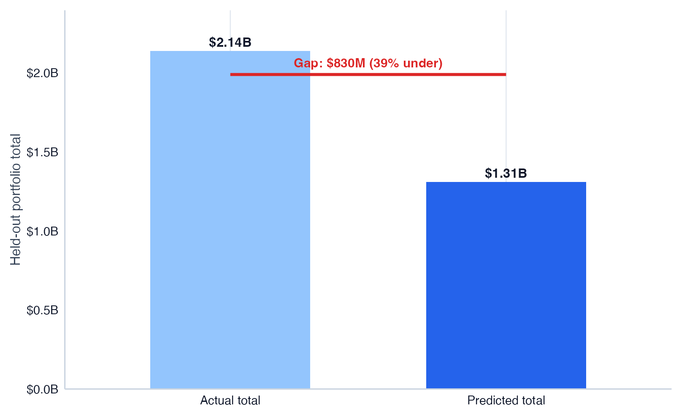
- The selected amount model under-forecasts the held-out portfolio: $1.31B predicted vs $2.14B actual.
- That is a gap of about $830M, or roughly 39% below the realized total on the test set.
- This is why the main deck uses the amount model for directional sizing and ranking, not as a committed aggregate forecast without an explicit bias-correction layer.
- The same hold-out evaluation still supports the model for per-opportunity ordering because MAE ≈ $65K and Median APE ≈ 61% are judged at deal level, not portfolio-total calibration.
Annex: strategic lever 1 — focus the same team on fewer, better-ranked deals
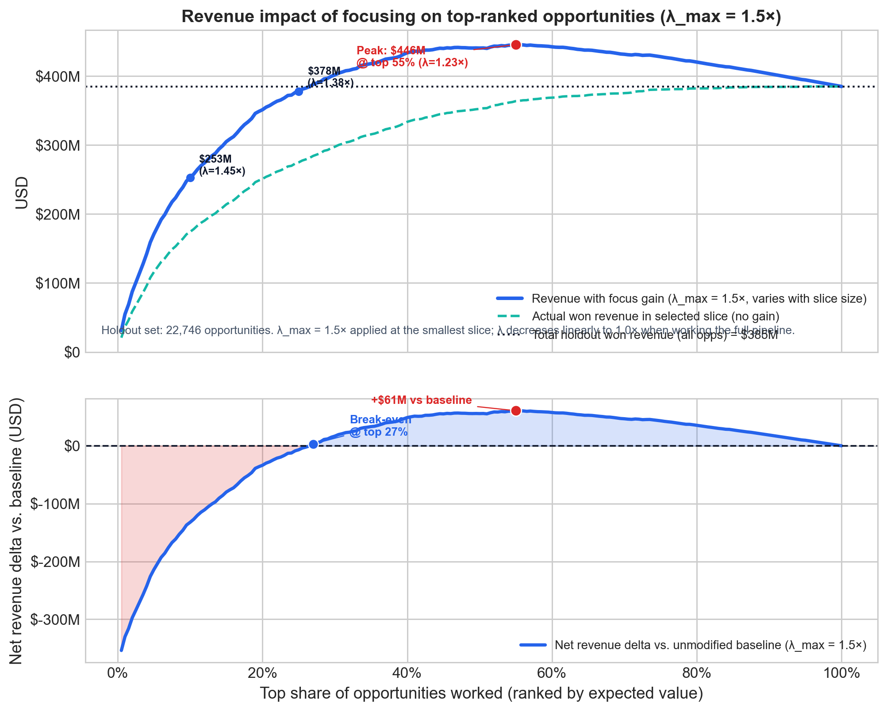
- Same salesforce, fewer deals — dropped opportunities go unworked.
- Focus gain grows as the slice shrinks (λ_max = 2.0× at top slice → 1.0× at full pipeline).
- Break-even at top ~12%; optimal at top ~42% → $566M (+$181M vs. baseline).
Annex: focus-gain sensitivity across λ values
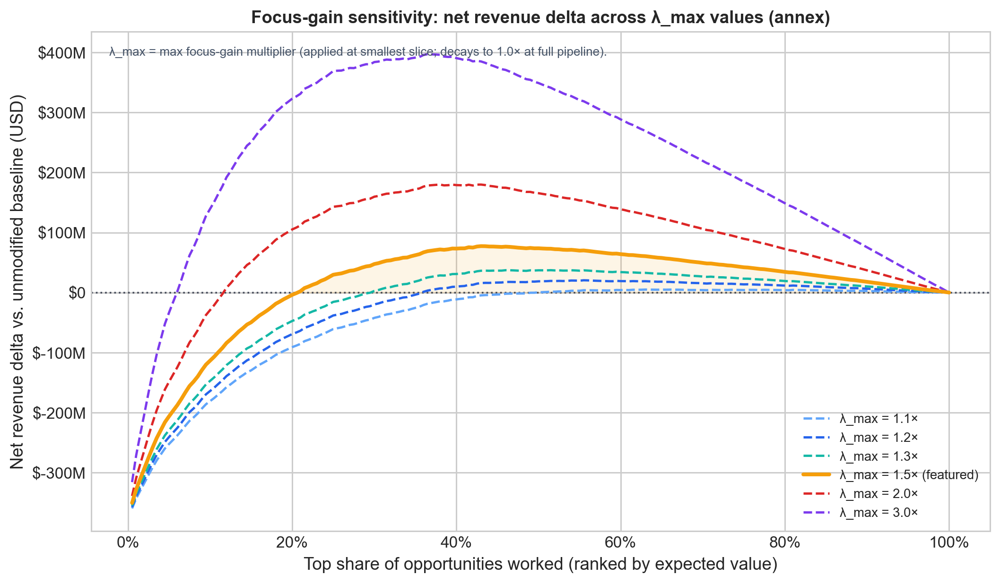
- Each curve shows the net revenue delta in USD vs. the full-pipeline baseline for a given λ_max — dropped deals are simply unworked (zero revenue from them), so the only gain is the focus uplift on worked deals.
- λ decays linearly to 1.0× at the full pipeline — so the gain is highest when the team is most concentrated.
- Break-even shifts left as λ_max increases: with the rerun dynamic classifier, the base scenario breaks even at about top 12% of the ranked pipeline when λ_max = 2.0.
- The current simulation uses λ_max = 2.00 as the base scenario.
Annex: Strategic lever 2: Reduce the salesforce and let the model pick the best opportunities
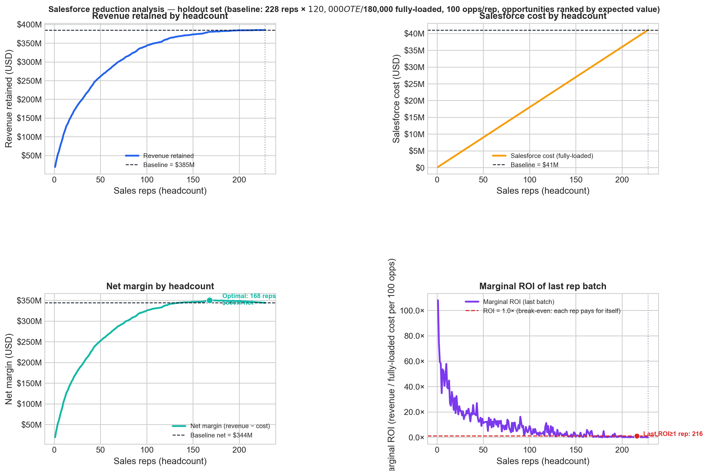
- Baseline: 228 reps, $385M realized revenue, and about $121M contribution after margin, base+overhead, commission, acquisition, and serving costs.
- Model ranks all opportunities by EV; each rep cut drops the lowest-ranked batch they covered.
- Optimal headcount: 100 reps → $361M revenue retained (93.8%) and +$29.5M contribution vs. baseline.
- Last individually positive rep batch is around rep #82 — after that point, incremental contribution no longer covers incremental operating cost.
Annex: salesforce reduction — marginal contribution per rep batch
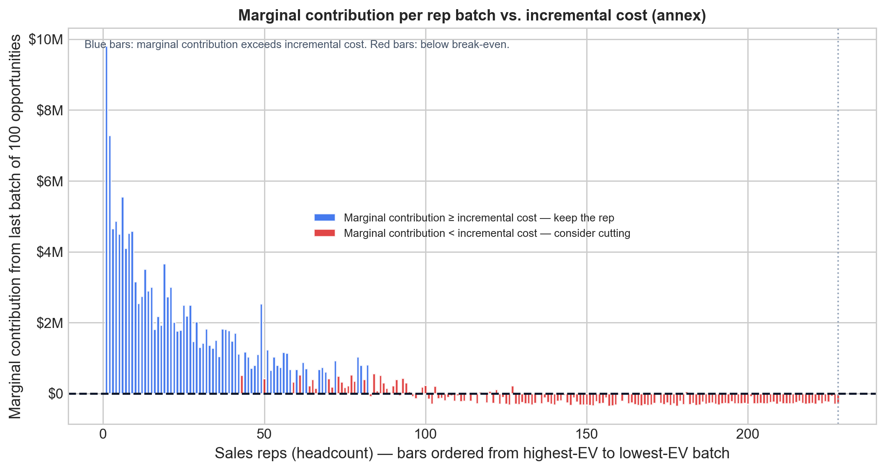
- Each bar shows the marginal contribution contributed by a batch of ~12 reps (one 100-opp increment), sorted from highest- to lowest-value batch.
- The comparison line represents the incremental operating cost of the same batch.
- Blue bars are ROI-positive: the batch adds more contribution than cost. Red bars are ROI-negative: cutting those reps improves contribution margin.
- With the stronger dynamic ranking, the crossover happens much earlier, around rep #82, which is why the resized team becomes much smaller under this richer formula.